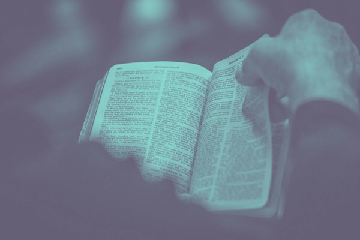
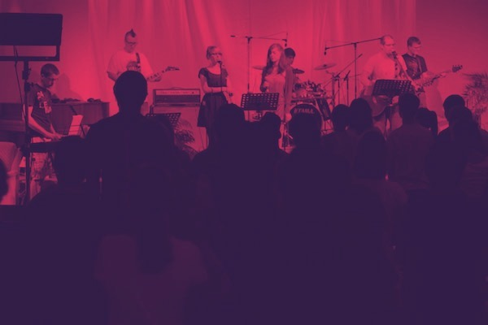
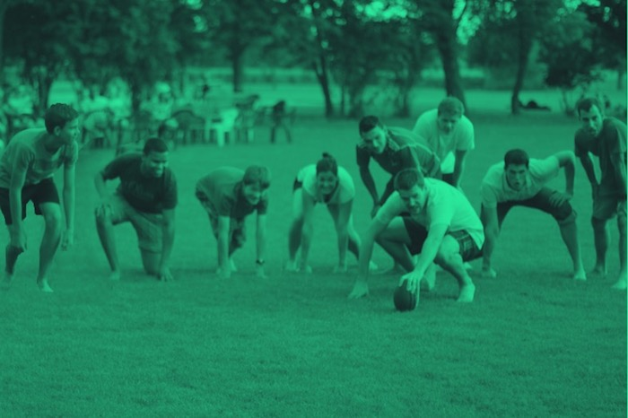
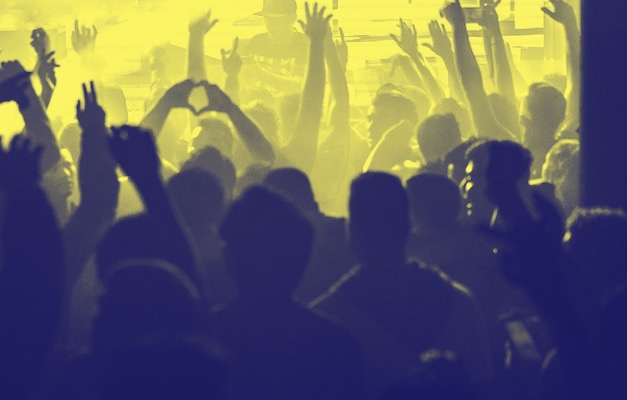
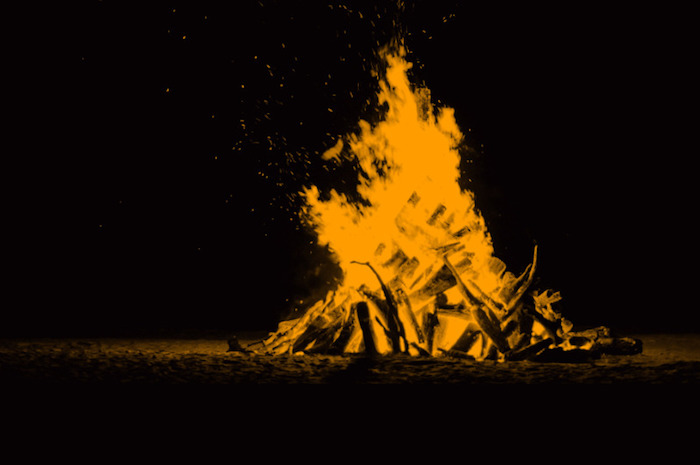
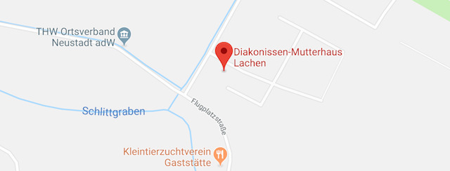

Was ist Reboot?
Reboot ist ein Event für Jugendliche ab 13 Jahren und junge Erwachsene.
Es findet jedes Jahr an Pfingsten in Lachen-Speyerdorf statt.
Vier Tage und drei Nächte, vollgepackt mit Message, Musik, Action, Bistro, Lagerfeuer, Feiern, genialem Essen und einer hammer Gemeinschaft.
Dieses Jahr lautet das Motto "CELEBRATE"! Sei dabei und feier mit!
ZUM PROGRAMM
Was erwartet dich?

Message und Seminare
Das Herz von Reboot ist es dich auf deinem Weg mit Jesus zu stärken. Die lebensnahen Impulse sollen dein Leben bereichern und helfen Gott kennen zu lernen. Egal ob du schon ein alter Hase bist oder noch viele Fragen hast: Für dich ist etwas dabei und du bist herzlich willkommen!
{% include referenten.html %}

Musik
Wir wollen feiern! Und das geht nicht ohne Musik. Wir wollen mit zeitgemäßer Musik laut werden und unsere Freude und Gedanken ausdrücken. Es gibt so viele Dinge, für die wir dankbar sein können und die Band wird uns richtig einheizen.

Action und Workshops
Reboot wird niemals langweilig! Auf dem riesigen Fußballfeld ist immer genügend Platz zum Kicken, Frisbee oder Rugby spielen. Auch das Beachvolleyball-Turnier und viele andere Workshops geben dir die Möglichkeit dich ordentlich auszutoben.

Feiern / Bistro
Das Bistrozelt ist die Quelle für gute Stimmung. Tagsüber kannst du es dir dort bei chilligen Beats, Eis und kühlen Getränken gemütlich machen. Und Abends wird richtig aufgedreht, getanzt und gefeiert bis man todmüde ins Bett fällt.

Zusammenhalt
Reboot ist immer ein Ort, wo neue Freundschaften entstehen und sich Beziehungen vertiefen.
Überall ist eine freundschaftliche Atmosphäre und gute Laune, egal ob in der Essensschlange oder abends am Lagerfeuer. Eine Gemeinschaft, wo du wirklich zuhause sein kannst.
Anfahrt

Flugplatzstraße 95
67435 Neustadt an der Weinstraße
Google Maps